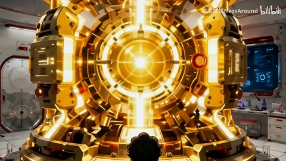

AI28 / 0—5.4秒
巨构：玄同无待〖AI全民制作人〗
极小人物面对巨大圆门和长柱列，暖色门缘对冷灰环境；2.867转白色瀑布墙，人物仍作为比例参照。
迁移提问：画面里有什么告诉观众“它有多大”？哪些地方值得停留，哪些重复景观可以删掉？
手法专题 / 规则、用途与取舍
以观看距离和运动方向改变心理距离，让观众发现、逼近、远离或重新理解对象。
环境揭示、人物情绪、冲刺、回忆、同一张图中的细节发现。
每镜都推近；速度变化没有事件依据；把同镜转动误算为剪辑；光流扭曲当成流畅。
①写出镜头为何移动；②确定起止构图；③给速度变化事件；④检查边界/分辨率；⑤让停留与运动形成节奏。
裁切推拉易；真实视角变化、角色运动和复杂光流需素材或生成。
基础机制已做13项原创演示，不等于本页所有复杂组合均已成片验证。
原机制演示 →AI28 / 0—5.4秒
极小人物面对巨大圆门和长柱列，暖色门缘对冷灰环境；2.867转白色瀑布墙，人物仍作为比例参照。
迁移提问：画面里有什么告诉观众“它有多大”？哪些地方值得停留，哪些重复景观可以删掉？

AI39 / 320—425.7秒
矿工逃生与实验者操作设备交替；蓝色焊接火花、金色圆环装置。423.7手按红按钮，424.233转较宽装置，随后拉远和光圈扩张。
迁移提问：这一镜增加了什么新信息？删掉它，动机、情绪或因果会不会丢失？

H33 / 0—18秒
黑白漫画底上紫蓝黑白同心断环，各弧旋转/缩放，中心白字定义与关键词替换，纸屑散落。
迁移提问：前景、中景、背景分别是什么？如果镜头移动，原图未画出的部分由谁补齐？

H47 / 71.8—73.8秒
71.822脚部，71.989转舞台全身冲刺，72.656转人物迎面前冲，73.74转剑的特写；期间披风/花瓣/面部变大连续。
迁移提问：观众能指出谁在攻击、朝哪边、是否击中吗？哪些是原素材的动作，哪些才是新增剪接或合成？

H36 / 12—25秒
大脸背景上小窗切换表情与Q版图；16.5转角色面部后，转头段出现重复/反向运动，24秒面部有块状分割。
迁移提问：观众能指出谁在攻击、朝哪边、是否击中吗？哪些是原素材的动作，哪些才是新增剪接或合成？
同一环境做固定、慢推、拉远三版，用一句话描述各自的心理距离。
交付时保留基础版与加效果版，并写“增加了什么意义、损失了什么清晰度”。
使用观察与复盘表 →